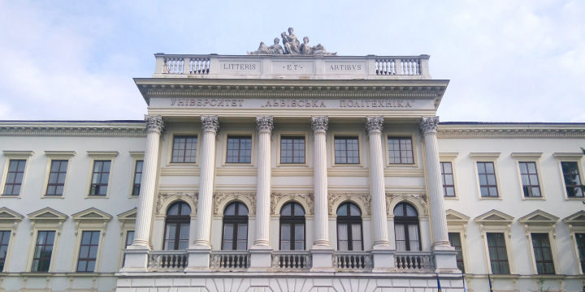 Звіт ректора про основні досягнення Львівської політехніки у 2025 році на Конференції трудового колективу Університету
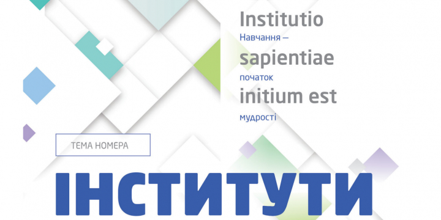 Інститути – досягнення, плани, мотивація: тематичний номер журналу «Львівська політехніка»
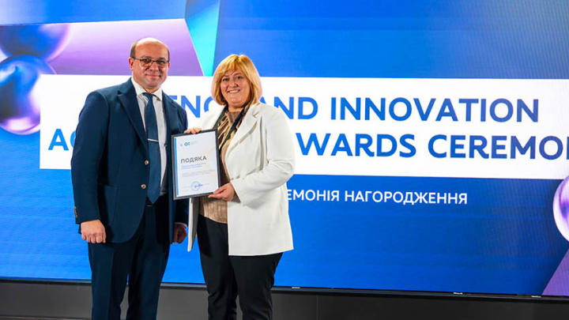 13 листоп. 2026, 16:25 Львівська політехніка отримала дві подяки Міністерства освіти і науки України за лідерство в науковій діяльності
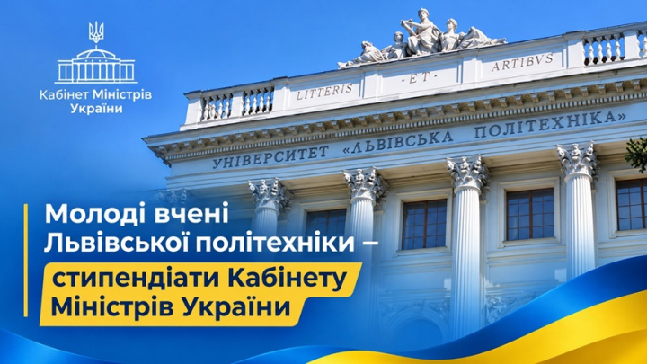 13 листоп. 2026, 15:46 16 молодих науковців Львівської політехніки стали стипендіатами Кабінету Міністрів України
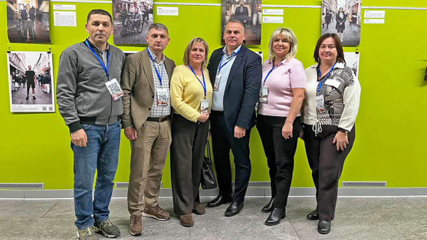 13 листоп. 2026, 15:10 Проректор Ігор Гельжинський представив досвід Львівської політехніки на Форумі доступності
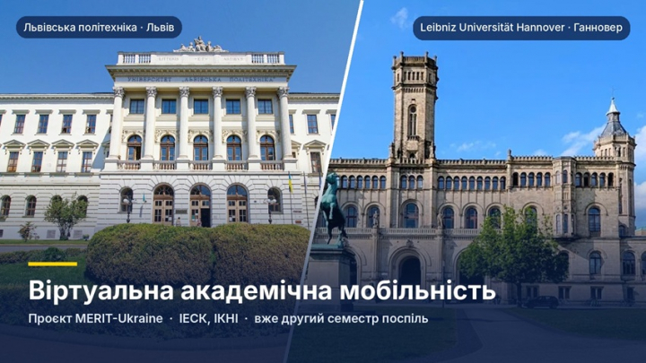 13 листоп. 2026, 14:33 Студенти ІЕСК, ІКНІ та ІМІТ навчаються у Ганноверському університеті в межах проєкту MERIT-Ukraine
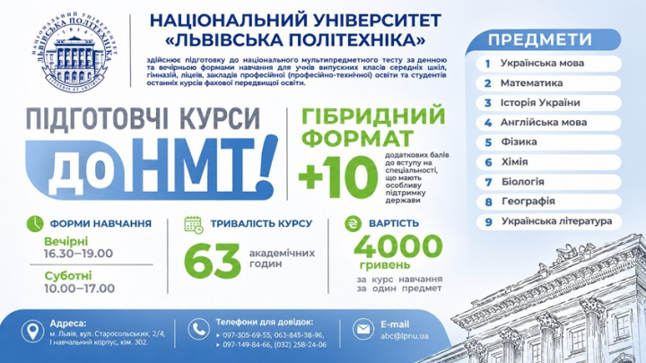 13 листоп. 2026, 13:55 Готуватися до НМТ разом із Львівською політехнікою можна очно і дистанційно
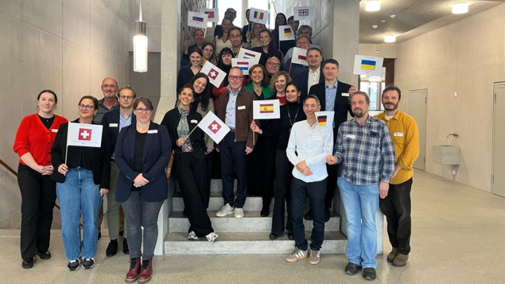 13 листоп. 2026, 13:30 Tech StartUp School приєдналася до реалізації проєкту BRIDGE: Bridge to Innovate — Connecting STEM talent to entrepreneurial pathways
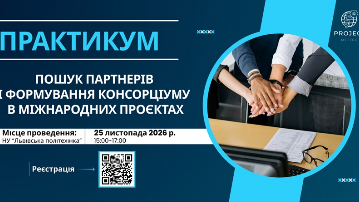 13 листоп. 2026, 13:15 Проєктний офіс запрошує на практикум «Пошук партнерів і формування консорціуму в міжнародних проєктах»
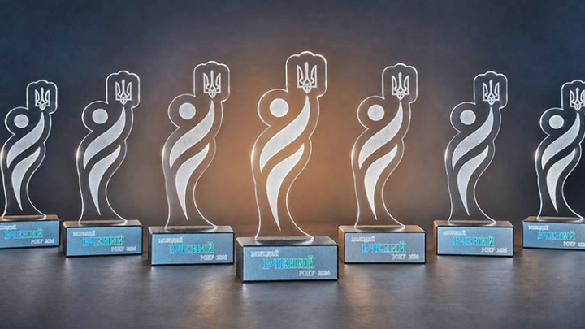 13 листоп. 2026, 12:55 Восьмеро науковців Львівської політехніки стали лауреатами конкурсу «Молодий вчений року – 2026»
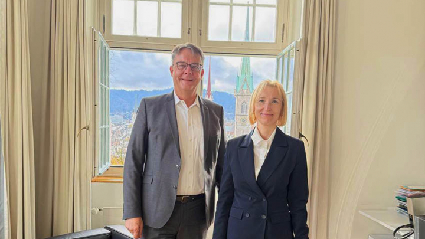 13 листоп. 2026, 12:21 Ректорка Львівської політехніки Наталія Шаховська зустрілася з президентом Цюрихського університету Міхаелем Шепманом
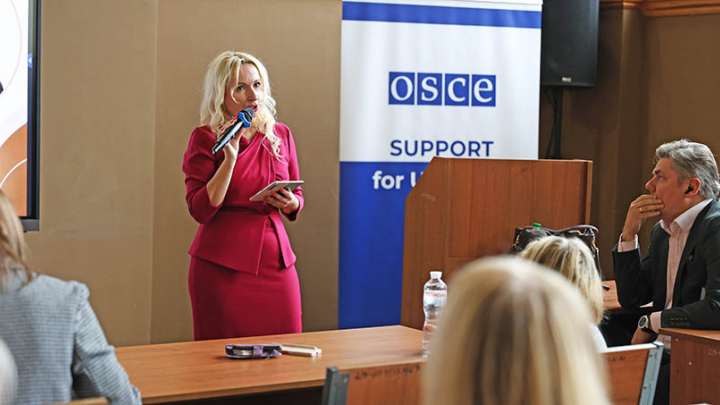 13 листоп. 2026, 12:03 «Правосуддя в часи змін»: суддя Верховного Суду Наталія Блажівська прочитала лекцію для студентів ІППО
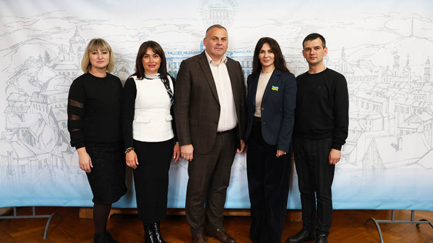 13 листоп. 2026, 11:15 Львівська політехніка та Миколаївський національний аграрний університет розвиватимуть спільні освітні й наукові проєкти
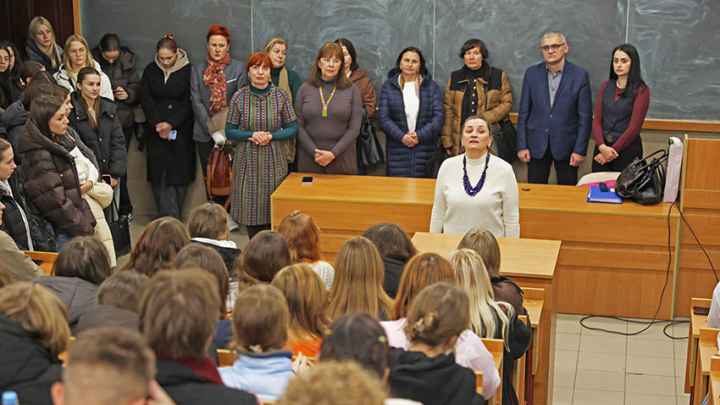 13 листоп. 2026, 10:08 У Львівській політехніці відбувся перший етап мовних конкурсів імені Тараса Шевченка та Петра Яцика